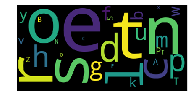

Synopsis Of Projects
Attention Under Construction!Weather prediction using NeuralProphet
- A data set projects Australia’s multiple weather parameters used to forecast the temperature at 3 pm.
- Tech: Python, NumPy, NeuralProphet, pandas, Matplotlib.
Force Feedback Racing Gear
- Racing wheel, accelerator paddle for playing simulator games able reflect realistic physics from the computer game such as Euro Truck Simulator.
- Tech: Arduino Leonardo, Optical rotary encoder, DC motor, Carbon film Potentiometer.
Videos
Images


House Price Prediction
- Web application based on an ML model to learn & predict house prices in the USA.
- Tech: Django, HTML, CSS, Bootstrap, Scikit-learn, Matplotlib, pandas.

Weather Application
- Tech: Django HTML, CSS, Botstrap, openWeather API

Face detection and recognition:
- TA portable device can detect a human face and recognize it in real-time.
- Tech: Python, OpenCV, Raspberry Pi.
Small 3D object modeling:
- A device can capture the shape of an object. The result is a 3D file of the object, which can be saved, and even 3D printed.
- Tech: C++, Arduino Nano, NEMA17 stepper motors, SHARP 0A51SK distance measurement IR sensor, A4988 stepper motor drivers.
Word-Cloud
- This program creates a "word cloud" from text. This script processes the text, removes punctuation, ignores case and words that do not contain all alphabets, counts the frequencies, and ignores uninteresting or irrelevant words. A dictionary is the output of the calculate_frequencies function. The wordcloud module will then generate the image from the dictionary.
- Tech: python
